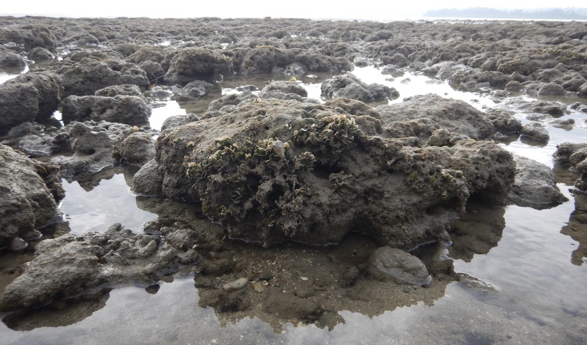
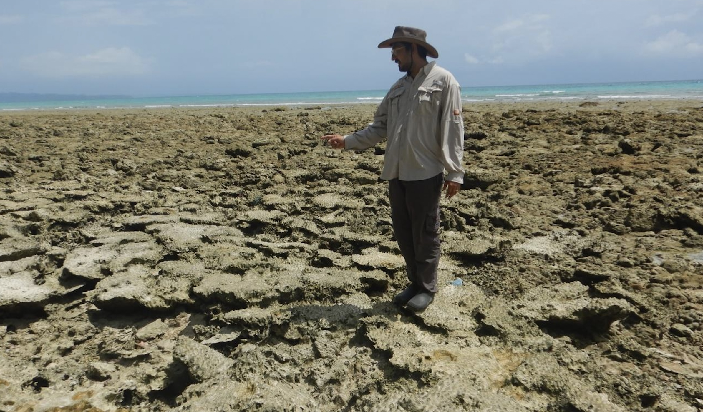
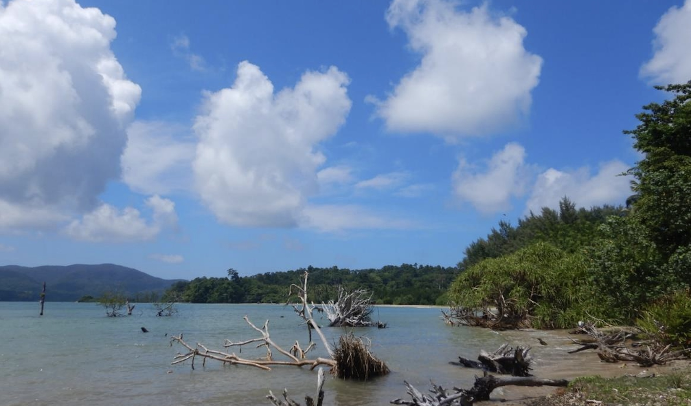
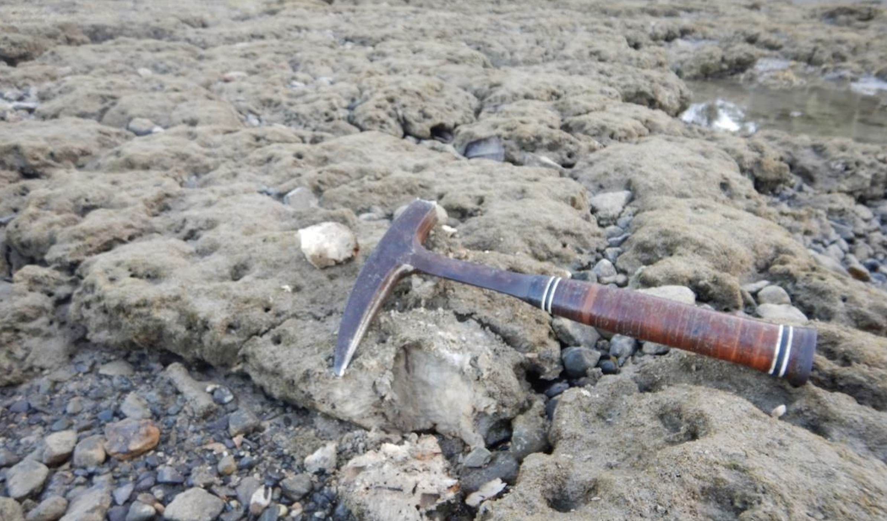
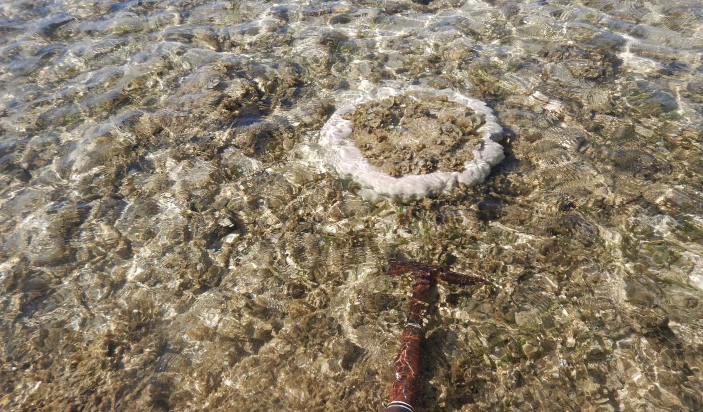
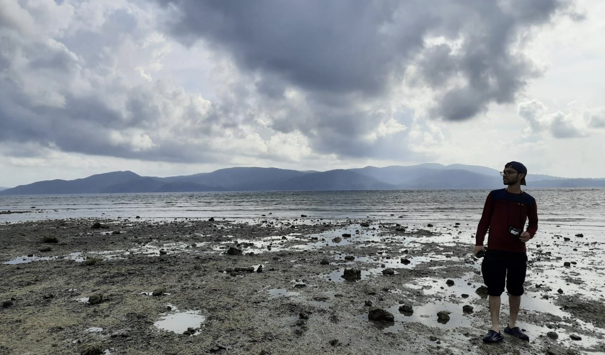
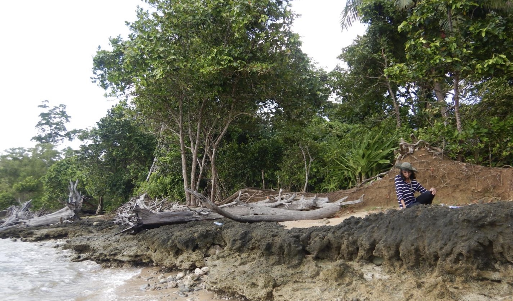

Green algae Halimeda encrusting over exposed dead corals, also contributing to the formation of modern carbonate sediments.

Exposed insitu corals fringing along the coastline of Kalapathar beach in Swaraj Dweep Island

A glimpse of the aftermath: Tsunami-affected coastal area showing evident signs of current coastal erosion along Barabalu Beach, South Andaman.

Exposed dead corals along the Burmanallah beach

Signs of Hope: New corals emerging in the shallow waters of Burmanallah coast, a glimmer of live coral

Beautiful Rutland Island graces the background, while I stand on the shores of Mundapahar beach in South Andaman.

Lithified beach sediments present above the high tide level, extending along certain sections of Chotabalu Beach in South Andaman.
The Andaman and Nicobar group of islands consist of 572 islands, spanning from 6°41’N to 13°45’N latitude and 92°57’E to 93°50’E longitude. The Andaman Sea lies on the eastern side of this island group, while the Bay of Bengal is located on the western side. The Andaman Islands are geologically part of an active subduction zone between the Indian and Burmese oceanic plates, forming an accretionary wedge system.
The composition of the Andaman Islands includes ultramafic mafic ophiolite rocks, flysch sediments, conglomeratic rocks, and younger sedimentary rocks like shale and limestones. Additionally, the periphery of the islands contains late Quaternary and Holocene rocks, as well as modern sediments, which are continuously produced and deposited along the coast and shallow shelf. Among these geological formations, carbonate rocks and sediments are a significant component.
Our focus lies in studying these modern carbonate rocks and sediments, aiming to gain a deeper understanding of the evolution of the late Quaternary carbonate system along the islands.